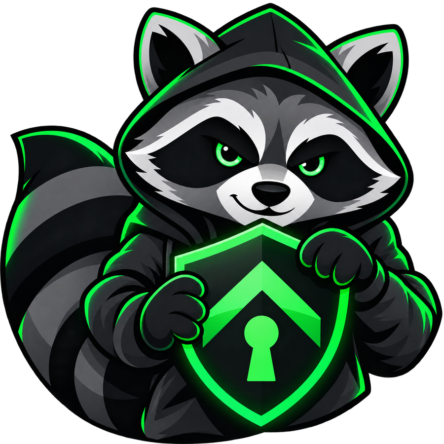

01
Sign in as yourself.
Connect using your organization’s existing sign-in. Your work identity is your way in.
Private access. A familiar way in.
VPN access that starts with your work identity
and follows your team’s access rules.

SupiVPN is a VPN project for teams that need access to private resources. It brings workplace sign-in and group-based access together.
People use their existing work identity. Teams define who can connect, with session rules that fit each group.
Connect using your organization’s existing sign-in. Your work identity is your way in.
Organize access around your teams, with policies matched to each group.
Set connection limits and session duration for each group. Keep access on your terms.
SupiVPN works alongside unmodified OpenVPN® Community software. SupiVPN handles sign-in and access policies, while OpenVPN® provides the VPN transport.
Client connections use OpenVPN® Connect , downloaded separately from its official website.
SupiVPN is currently in development.Good connections start with a hello